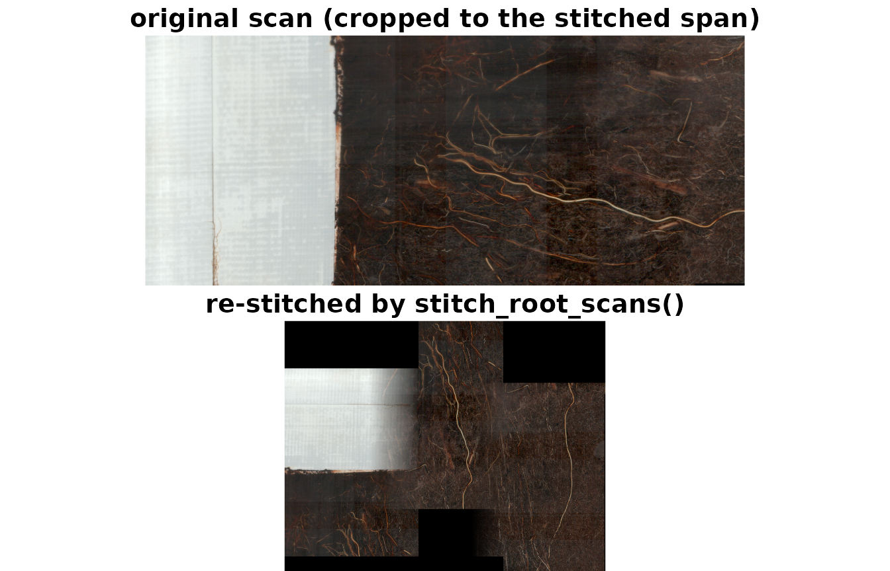

Stitching Scan Sequences into Mosaics with Rootopia
Johannes Cunow
Source:vignettes/Stitching_vignette.Rmd
Stitching_vignette.RmdStitching Scan Sequences into Mosaics
Minirhizotron cameras and flatbed scanners often capture a tube (or a long sample) as a sequence of overlapping frames. One function turns a folder of those frames into one mosaic per tube:
stitch_root_scans("path/to/scans", pattern = ".tiff", out_dir = "path/to/output")It discovers the files, groups them into one sequence per tube, sorts
each group, aligns and blends the frames, and (optionally) writes one
PNG per tube. That is the only function you need to call. (The per-pair
and per-sequence engines it uses are documented at
?stitch_image_pair and ?stitch_image_sequence
for advanced use; ?list_tubes and
?list_scan_files preview a folder.)
Any input format
Frames are loaded through load_flexible_image(), so the
same call works whatever your format: file paths
(.png, .jpg/.jpeg, .tif/.tiff,
.bmp), a terra SpatRaster, a
raster RasterLayer/RasterBrick,
an imager cimg, a magick-image,
or a plain matrix (grayscale) / array
(height x width x channel). Color and grayscale both work —
color is reduced to luma for the alignment step only.
What happens under the hood
For each consecutive pair of frames A (left) and B (right) within a tube, the wrapper:
-
Edge band — takes a vertical band (rows
vertical_offsettovertical_offset + vertical_region) of A’s rightedge_widthcolumns and B’s leftedge_widthcolumns. -
Reduce & preprocess — converts the band to luma
and applies
preprocessif set. -
Align — computes the FFT phase
correlation of the two bands; the peak gives the shift
(dx, dy)and a confidencepeak. -
Place — puts B at column
wA - edge_width + dx, sooverlap = edge_width - dx, and offsets it vertically bydy; the canvas grows to fit. -
Composite — combines the overlap with
blend.
These five steps repeat along the sequence, each frame onto the growing mosaic. Understanding them is enough to understand every setting below.
Demo: slice a real scan and stitch it back
rgb_Oulanka2023_Session03_T067 is a real RGB tube scan.
We cut it into overlapping pieces, save them as a little “tube” folder,
and let stitch_root_scans() reassemble it — exactly the
path your own scans take.
data("rgb_Oulanka2023_Session03_T067")
# load to an (H, W, C) array; downsampled here only to keep the vignette light
img <- load_flexible_image(terra::rast(rgb_Oulanka2023_Session03_T067),
output_format = "array", normalize = FALSE)
#> Warning: `normalize`, `binarize`, and `denormalize` are deprecated; use `scale`
#> ("to_01", "to_255", "binary", "none") instead.
img <- img[seq(1, nrow(img), 3), seq(1, ncol(img), 3), , drop = FALSE]
dim(img) # rows (rotation) x cols (length) x RGB
#> [1] 387 1633 3
W <- ncol(img)
piece_w <- W %/% 3L # each piece ~1/3 of the length
ov <- piece_w %/% 4L # overlap = 25% of a piece
step <- piece_w - ov
starts <- (0:((W - piece_w) %/% step)) * step
pieces <- lapply(starts, function(s) img[, (s + 1):(s + piece_w), , drop = FALSE])
length(pieces) # number of overlapping frames
#> [1] 3
# save the pieces as one tube ("T067") in a temp folder, as if freshly scanned
d <- file.path(tempdir(), "stitch_demo")
dir.create(d, showWarnings = FALSE)
sc <- if (max(img, na.rm = TRUE) > 1) 255 else 1
for (i in seq_along(pieces)) {
png::writePNG(pmin(pmax(pieces[[i]] / sc, 0), 1),
file.path(d, sprintf("Oulanka_T067_%02d.png", i)))
}
list.files(d)
#> [1] "Oulanka_T067_01.png" "Oulanka_T067_02.png" "Oulanka_T067_03.png"
res <- stitch_root_scans(d, pattern = ".png", edge_width = ov,
vertical_region = nrow(img), vertical_offset = 0,
report = TRUE, verbose = FALSE)
mosaic <- res$mosaics[["T067"]]
dim(mosaic) # reconstructed length
#> [1] 723 926 3
res$report # per-join dx, dy, peak (confidence), overlap
#> tube step dx dy peak overlap
#> 1 T067 1 -7 -137 9.802271e-05 143
#> 2 T067 2 44 179 1.129344e-04 92
norm01 <- function(a) a / max(a, na.rm = TRUE) # display only
span <- ncol(mosaic)
op <- graphics::par(mfrow = c(2, 1), mar = c(0, 0, 1.4, 0))
plot(grDevices::as.raster(norm01(img[, seq_len(span), , drop = FALSE])))
graphics::title("original scan (cropped to the stitched span)")
plot(grDevices::as.raster(norm01(mosaic)))
graphics::title("re-stitched by stitch_root_scans()")
graphics::par(op)The recovered dx is ~0 (we sliced with identical edges)
and peak is high — a clean alignment — and the two panels
are indistinguishable. (This chunk needs the suggested png
package to write the demo files.)
Choosing settings
Each setting maps onto a step above.
edge_width — the band width used to
align. Because overlap = edge_width - dx, set it to roughly
1-2x your true overlap (the overlap should be between
about half and all of edge_width). Too small misses
matching content; too large dilutes the peak.
vertical_region /
vertical_offset — which rows are matched. Raise
vertical_offset to skip a header, label, or tape strip at
the top.
direction — "horizontal"
(default, frames side-by-side) or "vertical" (frames
stacked top-to-bottom, e.g. strips acquired down a tube).
method — "phase" (FFT
phase correlation) is supported. The Python tool’s
"feature" (SIFT/ORB) needs OpenCV and has no CRAN backend,
so it errors with a message rather than guessing.
preprocess — applied to the edge bands
before correlation:
| value | effect | use when |
|---|---|---|
"none" |
raw luma | well-textured color scans |
"center" |
subtract mean | mild offset differences |
"hann" |
demean + Hann window | suppress FFT edge/wrap artifacts |
"grad" / "grad_norm"
|
gradient magnitude | uneven lighting / vignetting, sparse texture |
"norm" / "center_norm"
|
scale by SD | little effect on phase correlation alone |
blend / blend_width — how
the overlap is combined:
| value | effect | use when |
|---|---|---|
"linear" |
feather (alpha 1->0) | color scans; hides exposure seams |
"overlay" |
second frame on top | hard seam, no averaging |
"overlay_first" |
first frame on top | hard seam, keep frame 1 |
"max" |
per-pixel brighter / union | segmented / binary masks |
"min" |
per-pixel darker | dark-feature masks |
For segmented masks (root = 1, background = 0)
prefer "max": feathering averages, turning a root
pixel into a fractional value (e.g. 0.5) and ghosting thin
roots where alignment is off by a pixel. "max"
keeps any root from either frame and never invents in-between values.
blend_width narrows the linear ramp to a centered band to
reduce ghosting on color scans.
Cheat-sheet by image type
| Your data | Suggested call |
|---|---|
| Color flatbed / RGB tube frames |
preprocess = "none", blend = "linear"
|
| Uneven lighting / vignetting |
preprocess = "grad" (or "hann") |
| Segmented / binary masks |
blend = "max", preprocess = "none"
|
| Strips acquired down the tube | direction = "vertical" |
| Low, fixed overlap |
edge_width ~ 1-2x that overlap |
Only how you supply frames changes with format; the settings behave the same.
Working with a real folder
# preview first
list_tubes("path/to/scans", pattern = ".tiff") # index | tube | n_frames
# stitch every tube, one PNG each
stitch_root_scans("path/to/scans", pattern = ".tiff", out_dir = "path/to/output")
# stitch a subset, pick a blend for segmented masks, and get a quality report
res <- stitch_root_scans(
"path/to/scans", pattern = ".tiff",
tubes = 1:36, # or tubes = c("T037","T040"), or tubes = "ask"
blend = "max",
report = TRUE
)
res$mosaics # named list, one array per tube
res$report # tube | step | dx | dy | peak | overlap
aggregate(peak ~ tube, res$report, mean) # mean confidence per tubeBy default frames are stitched in sorted file-name
order (see Naming, selection & ordering below to
change it). stitch_root_scans() also accepts a plain
character vector of paths.
Naming, selection & ordering
Grouping — group_regex. A regular
expression that pulls a tube id out of each path; files sharing that id
form one sequence. The default "T0\\d{2}" (the
\\ is R string-escaping for the regex T0\d{2})
matches T0 plus two digits, e.g. T067. Adapt
it to your names, or use NULL to put every file in a single
mosaic:
group_regex = "T\\d+" # T1, T67, T123
group_regex = "tube[-_]?\\d+" # tube12 / tube_12 / tube-12
group_regex = NULL # no grouping -> one mosaicSelecting — select vs
tubes. select indexes the sorted
file list before grouping; tubes selects
whole tubes by index, name, or interactively. Use
list_scan_files() / list_tubes() to see the
indices.
stitch_root_scans("scans", pattern = ".tiff", select = 1:36) # first 36 files
stitch_root_scans("scans", pattern = ".tiff", tubes = 1:36) # first 36 tubes
stitch_root_scans("scans", pattern = ".tiff", tubes = c("T037", "T040")) # named tubes
stitch_root_scans("scans", pattern = ".tiff", tubes = "ask") # interactiveNormally you want tubes; select is for raw
file ranges.
Ordering — order_by /
decreasing. Frames within a tube are stitched in
order. The default key is the file name, which sorts
lexicographically — so unpadded numbers come out wrong
(_10 before _2). Use order_by to
sort by the frame number instead, and decreasing = TRUE to
reverse it (e.g. frames numbered from the bottom of the tube
upward):
# order by the number just before the extension, e.g. ..._02.tiff, ..._10.tiff
stitch_root_scans("scans", pattern = ".tiff", order_by = "\\d+(?=\\.)")
stitch_root_scans("scans", pattern = ".tiff", order_by = "\\d+(?=\\.)", decreasing = TRUE)(Equivalently, zero-pad your frame numbers — _02,
_10 — so the default name sort is already correct.)
Output names — out_prefix /
out_format. When out_dir is set, each
mosaic is written to
<out_dir>/<out_prefix><tube>.<ext>.
out_prefix tags a session/site so separate runs don’t
collide; out_format picks "png" (default) or
"tiff":
stitch_root_scans("scans/Oulanka2020_November", pattern = ".tiff",
out_dir = "mosaics", out_prefix = "Oulanka2020_Session03_",
out_format = "tiff")
# -> mosaics/Oulanka2020_Session03_T067.tif, ...T068.tif, ...Quality control
Use the report’s peak to spot weak joins before trusting
a mosaic:
res <- stitch_root_scans("path/to/scans", pattern = ".tiff", report = TRUE)
res$report[order(res$report$peak), ][1:10, ] # least-confident joins firstIf a tube aligns poorly: bring edge_width closer to the
real overlap, raise vertical_offset past a header/tape
strip, try preprocess = "grad" for uneven lighting, or
confirm the frames are in the intended (filename) order.